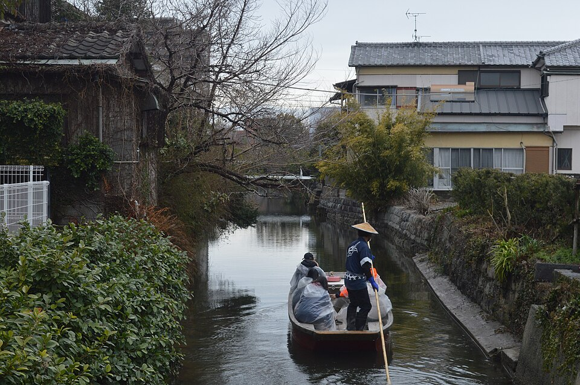

水郷の街
城下町の面影を残す「水の都」を巡る旅
柳川川下りは、かつて柳川城の外堀として機能していた掘割（人工の水路）を「どんこ船」と呼ばれる木造船に乗って巡る、福岡を代表する観光名物です。
船頭が一本の竹竿で見事に船を操り、船唄を口ずさみながら四季折々の風景や歴史的建造物案内をしてくれます。城下町の風情を水上からゆったりとお楽しみいただけます。
柳川川下りの主な見どころ
船頭の巧みな竿さばきと船唄
低い橋の下をくぐる際の見事なパフォーマンスや、水面に響く情緒溢れる船唄が旅の気分を高めてくれます。
四季折々の水辺の景色
春の桜や新緑、初夏のしょうぶ、冬の「こたつ舟」など、どの季節に訪れても異なる美しい情景を楽しめます。
名物「うなぎのせいろ蒸し」
下船場周辺には老舗のうなぎ屋が多く立ち並び、タレが染み込んだご飯とうなぎを蒸し上げた名物料理を満喫できます。
施設・運行情報
| 所在地 | 福岡県柳川市（西鉄柳川駅周辺に複数の船会社乗船場あり） |
|---|---|
| 運行時間 | 9:00～17:00頃（乗船会社や季節により異なります） |
| 所要時間 | 約60分（コース長 約4.5km） |
| 乗船料 | 大人（中学生以上）約1,500円～2,000円 / 小人 約800円～1,000円 |
| アクセス | 西鉄天神大牟田線「西鉄柳川駅」より徒歩または各船会社の無料送迎バス利用 |